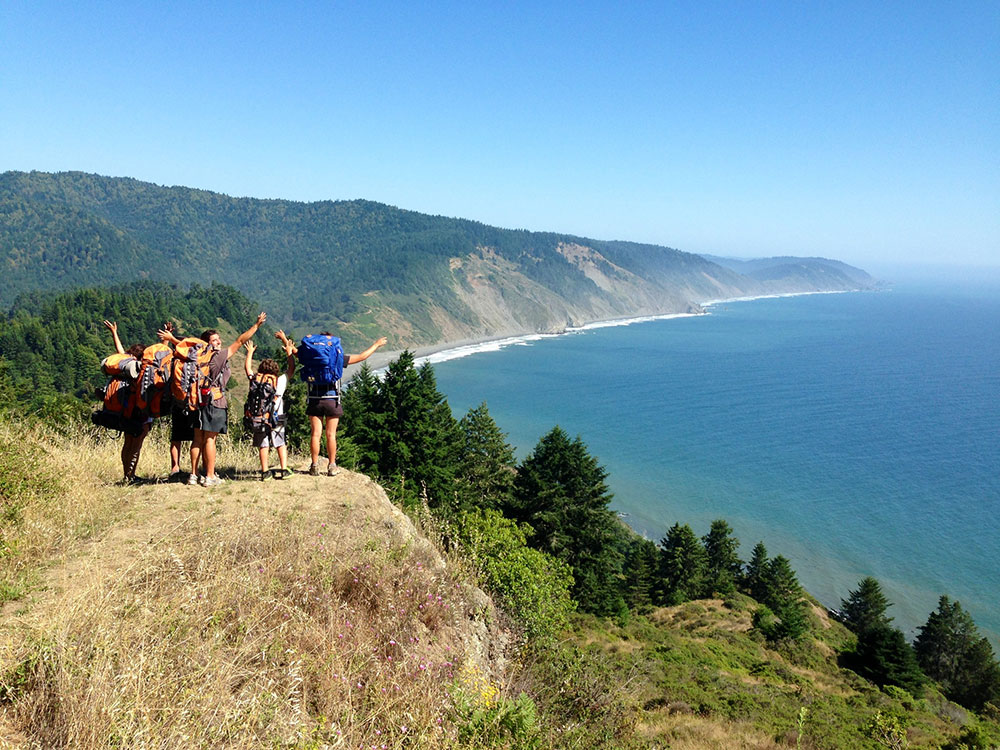
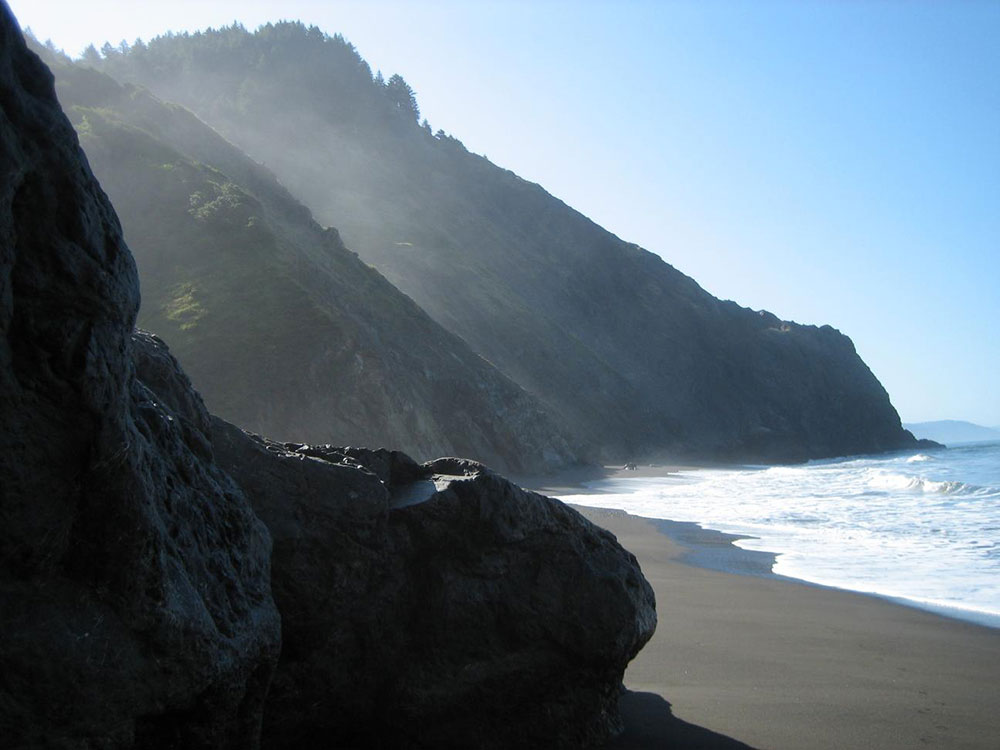

Mostly natural and undeveloped area of the California North Coast in Humboldt and Mendocino Counties, known for hiking, its black sand beaches, and rugged and remote location
General Information
Overnight backpacking: $18 per person (includes $6 reservation + $12 use fee)
Permits required for overnight use via Recreation.gov
Not recommended due to rough terrain
Avoid winter due to heavy rain, impassable tides, and strong winds
How to Get There
From Mendocino, CA (110 mi): Take CA-1 N to US-101 N, then exit onto CA-254 N through Redway, continue west on Briceland Thorn Rd to Shelter Cove Rd and follow signs to the Lost Coast Trailhead.
Overview
The Lost Coast is a mostly natural and undeveloped stretch of the California North Coast in Humboldt and Mendocino counties, centered on the King Range. It earned its name after the area was depopulated in the 1930s, and the steep coastal mountains made the coastline too costly for state highway or county road builders, leaving it the most remote portion of the California coast. Much of the region is protected today as the King Range National Conservation Area, which Congress designated in 1970 as the nation’s first National Conservation Area and which the Bureau of Land Management manages, along with Sinkyone Wilderness State Park to the south. People come for the 25-mile Lost Coast Trail along black sand beaches, for the rugged ridges of the King Range that rise steeply from the Pacific, and for the solitude, Roosevelt elk and wildlife viewing. State Route 1 turns inland at Rockport and State Route 211 starts at Ferndale, so no major highway reaches this shoreline, and communities such as Petrolia, Shelter Cove and Whitethorn are isolated from the rest of California.
Access
The Lost Coast is reached from US-101 by winding, slow mountain roads, so allow extra time for every leg. The south access route to Shelter Cove leaves US-101 at the Redway and Garberville area and takes roughly 45 minutes for the 22 miles, and Shelter Cove is the base for the southern end of the Lost Coast Trail at Black Sands Beach. The northern trailhead at Mattole Beach is reached via Smith-Etter Road from Honeydew, with other roads coming in from Ferndale. BLM says the main roads are normally passable by passenger cars except during heavy winter storms, while primitive roads may close seasonally. The Lost Coast Trail is a point-to-point route, so many hikers arrange a shuttle between the two trailheads. There is little or no cell service and few services, so carry supplies and fuel.
Seasons
Late spring through early fall is the best time to visit, when the weather is driest and tides and creeks are most manageable, though fog and wind are common along the coast. Summer brings the most backpackers, so overnight permits for the Lost Coast Trail are in highest demand then. Winter storms bring heavy rain, large waves, downed trees, landslides and hazardous creek crossings, and the trail can be dangerous or impassable because of high tides. Always check tide tables and the National Weather Service forecast, since several sections of the beach can be crossed only at low tide.
Lost Coast National Recreation Trail
The Lost Coast National Recreation Trail winds through one of California’s most remote and rugged coastal regions, stretching nearly 25 miles between Mattole Beach and Black Sands Beach in Humboldt and Mendocino counties. This untouched stretch of shoreline, part of the King Range National Conservation Area, offers dramatic views of the Pacific Ocean, black sand beaches formed by tectonic activity, and towering peaks that rise over 4,000 feet above sea level. Named the “Lost Coast” due to its isolation and lack of major roads, the area remains a haven for solitude seekers and nature lovers alike, where Roosevelt elk graze in bluff-top prairies and sea lions bask on rocky outcrops.
Backpackers who venture onto the trail are rewarded with a truly wild experience. The hike typically takes three days to complete and requires careful planning around tides, as several sections of the trail are impassable during high tide. Along the way, hikers encounter relics of the region’s past, including the abandoned Punta Gorda Lighthouse, shell mounds from Native American settlements, and remnants of early logging communities. Wildlife is abundant, with sightings of black bears, otters, and seabirds common. Permits are required to hike the trail, and visitors must carry bear-resistant containers and consult tide charts to ensure safe passage through tidal zones.
First Five Miles of the Lost Coast Trail
The Lost Coast Trail begins at Mattole Beach, located in the King Range National Conservation Area. The first five miles of the trail follow the coastline southward, hugging the edge where the Pacific Ocean meets steep, forested mountains. The terrain is a mix of soft sand, gravel, and rocky outcrops, which can slow progress and require careful footing. Hikers immediately encounter exposed stretches of beach, with little shade and constant wind. The trail is mostly flat in elevation but physically demanding due to the unstable surfaces and the need to navigate around driftwood and tide-washed debris.
Within the first two miles, the trail passes Sea Lion Gulch, a tidal zone that becomes impassable when water levels exceed 2.5 feet. Hikers must time their entry during a receding tide to avoid being stranded. The route continues toward Punta Gorda, where the historic lighthouse stands as a landmark. This section includes a mix of beach walking and short inland detours over bluff-top trails. The path is often overgrown with coastal vegetation, and long pants are recommended to avoid scratches and ticks. Creek crossings, such as those at Fourmile Creek, offer opportunities to refill water using filtration systems, though water levels can vary seasonally.
The final stretch of the first five miles transitions into more rugged terrain, with larger boulders and narrow beach corridors. The trail skirts the base of cliffs and requires attention to tide charts, as several pinch points can flood quickly. Wildlife sightings are common—hikers may encounter black-tailed deer, seabirds, and occasionally black bears. Campsites are informal and scattered, with flat areas near creek mouths being the most reliable. Despite the lack of elevation gain, the combination of soft sand, tidal timing, and exposure to the elements makes this section of the Lost Coast Trail a uniquely challenging and rewarding experience for prepared backpackers.
Visitor Centers
There is no visitor center on the Lost Coast itself. The BLM King Range Project Office, can answer questions about trail conditions, permits and road closures at (707) 986-5400, and the BLM Arcata Field Office can be reached at (707) 825-2300. Additional information is available on the BLM website. Overnight use of the Lost Coast Trail requires a permit reserved through Recreation.gov.
Camping and Lodging
Camping is the main way to stay on the Lost Coast. BLM operates the Mattole Recreation Site and Honeydew Creek Recreation Site, and additional BLM campgrounds are found in the King Range uplands. Backpackers on the Lost Coast Trail use informal beach and creek-mouth campsites under a permit. For a bed, Shelter Cove has motels, inns and vacation rentals on the coast, while Garberville, Redway and Whitethorn along the South Fork Eel River offer more motels and services within about 45 minutes to an hour. Ferndale and Eureka to the north have a wider selection of hotels, inns and restaurants, roughly 1.5 to 2 hours away.
This article uses material from the Wikipedia articles and official tourism pages for the Lost Coast, HikingGuy, and Backpacker Magazine, which is released under the Creative Commons Attribution-Share-Alike License 3.0. Additional information from the Bureau of Land Management.


